[1]:
from itertools import product
import numpy as np
import pandas as pd
import seaborn as sns
from scipy.stats import gmean
from sklearn.model_selection import train_test_split
import matplotlib.pyplot as plt
from biodoe_tools.preferences import kwarg_savefig, outputdir, f2s
from biodoe_tools.ml import plot_pr, plot_roc
from sklearn.metrics import accuracy_score, roc_auc_score, roc_curve, average_precision_score, f1_score
from sklearn.linear_model import LogisticRegression
from biodoe_tools.simulation.esm4_metrics import *
[2]:
top10 = np.array([
"positive_pathway_coverage",
"max_positive_edge_density",
"max_positive_cascade_length_ratio",
"edge_effectivity",
"mean_factor_density",
"max_synergetic_edge_density",
"mean_positive_edge_density",
"pathway_coverage",
"max_cascade_length_ratio",
"effective_edge_positivity"
])
negs = [
"max_positive_edge_density",
"max_positive_cascade_length_ratio",
"max_synergetic_edge_density",
"mean_positive_edge_density",
"effective_edge_positivity"
]
key_features = [
"positive_pathway_coverage",
"max_positive_edge_density",
"max_synergetic_edge_density",
"mean_positive_edge_density",
"pathway_coverage",
"effective_edge_positivity"
]
[3]:
from tqdm.notebook import tqdm
edges = np.array(list(map(list, product([-1, 0, 1], repeat=10))))
n = (lambda arr: (-1 + np.sqrt(1 + 8 * arr.size)) / 2)(edges[0])
ppc = np.fromiter(map(positive_pathway_coverage, edges), float).reshape(-1, 1)
maxped = np.fromiter(map(lambda arr: 1 - max_positive_edge_density(arr), edges), float).reshape(-1, 1)
maxsed = np.fromiter(map(lambda arr: 1 - max_synergetic_edge_density(arr), edges), float).reshape(-1, 1)
meanped = np.fromiter(map(lambda arr: 1 - mean_positive_edge_density(arr), edges), float).reshape(-1, 1)
pc = np.fromiter(map(pathway_coverage, edges), float).reshape(-1, 1)
eep = np.fromiter(map(lambda arr: 1 - effective_edge_positivity(arr), edges), float).reshape(-1, 1)
full = np.hstack([ppc, maxped, maxsed, meanped, pc, eep])
arr_top10 = np.hstack([
np.fromiter(
map(
(lambda arr: 1 - eval(f)(arr)) if f in negs else eval(f),
edges
), float
).reshape(-1, 1) for f in top10
])
df = pd.concat(
[
pd.read_feather(f"{outputdir}/esm_test4.feather"),
pd.DataFrame(
arr_top10,
columns=top10
),
pd.DataFrame({
f"arithmetic{i + 1}": mat.mean(axis=1) for i, mat in tqdm(enumerate(
[
full[:, np.where(arr_bool)[0]] for arr_bool in map(
lambda lst_bool: np.array(lst_bool),
product(*[[True, False]] * 6)
) if arr_bool.sum() > 1
]
))
})
],
axis=1
)
df = df.assign(
better_with_pb=df.pb > df.cloo
)
[4]:
df
[4]:
| cloo | pb | v | positive_pathway_coverage | max_positive_edge_density | max_positive_cascade_length_ratio | edge_effectivity | mean_factor_density | max_synergetic_edge_density | ... | arithmetic49 | arithmetic50 | arithmetic51 | arithmetic52 | arithmetic53 | arithmetic54 | arithmetic55 | arithmetic56 | arithmetic57 | better_with_pb | ||
|---|---|---|---|---|---|---|---|---|---|---|---|---|---|---|---|---|---|---|---|---|---|
| 0 | 0.000000 | 0.000000 | 0 | neither | 0.0 | 1.00 | 1.00 | 1.0 | 1.0 | 1.000000 | ... | 1.000000 | 1.000000 | 1.000000 | 1.000000 | 1.000000 | 1.000000 | 1.00 | 1.000000 | 1.000000 | False |
| 1 | 0.000000 | 0.000000 | 0 | neither | 0.0 | 1.00 | 1.00 | 1.0 | 0.9 | 1.000000 | ... | 1.000000 | 1.000000 | 1.000000 | 1.000000 | 1.000000 | 1.000000 | 1.00 | 1.000000 | 1.000000 | False |
| 2 | 0.000000 | 0.000000 | 0 | neither | 0.0 | 1.00 | 1.00 | 1.0 | 1.0 | 0.833333 | ... | 0.888889 | 0.916667 | 0.888889 | 0.916667 | 0.833333 | 0.944444 | 1.00 | 0.916667 | 0.916667 | False |
| 3 | 0.000000 | 0.000000 | 0 | neither | 0.0 | 1.00 | 1.00 | 1.0 | 1.0 | 1.000000 | ... | 1.000000 | 1.000000 | 1.000000 | 1.000000 | 1.000000 | 1.000000 | 1.00 | 1.000000 | 1.000000 | False |
| 4 | 0.000000 | 0.000000 | 0 | neither | 0.0 | 1.00 | 1.00 | 1.0 | 0.8 | 1.000000 | ... | 1.000000 | 1.000000 | 1.000000 | 1.000000 | 1.000000 | 1.000000 | 1.00 | 1.000000 | 1.000000 | False |
| ... | ... | ... | ... | ... | ... | ... | ... | ... | ... | ... | ... | ... | ... | ... | ... | ... | ... | ... | ... | ... | ... |
| 59044 | 0.750000 | 0.750000 | 3 | both | 1.0 | 0.25 | 0.25 | 1.0 | 0.8 | 0.250000 | ... | 0.250000 | 0.375000 | 0.416667 | 0.625000 | 0.125000 | 0.500000 | 0.75 | 0.250000 | 0.500000 | False |
| 59045 | 1.000000 | 0.750000 | 1 | C+LOO | 1.0 | 0.00 | 0.00 | 1.0 | 1.0 | 0.000000 | ... | 0.033333 | 0.050000 | 0.333333 | 0.500000 | 0.000000 | 0.366667 | 0.55 | 0.050000 | 0.500000 | False |
| 59046 | 0.333333 | -0.333333 | 0 | neither | 1.0 | 0.50 | 0.25 | 1.0 | 1.0 | 0.500000 | ... | 0.322222 | 0.400000 | 0.555556 | 0.750000 | 0.333333 | 0.488889 | 0.65 | 0.233333 | 0.583333 | False |
| 59047 | 0.750000 | 0.750000 | 3 | both | 1.0 | 0.40 | 0.25 | 1.0 | 0.9 | 0.400000 | ... | 0.233333 | 0.350000 | 0.466667 | 0.700000 | 0.200000 | 0.433333 | 0.65 | 0.150000 | 0.500000 | False |
| 59048 | 1.000000 | 1.000000 | 3 | both | 1.0 | 0.00 | 0.00 | 1.0 | 1.0 | 0.000000 | ... | 0.000000 | 0.000000 | 0.333333 | 0.500000 | 0.000000 | 0.333333 | 0.50 | 0.000000 | 0.500000 | False |
59049 rows × 72 columns
def cai_performance(data, metric, xrange = None): xrange = np.linspace(0, 1, 1001) if xrange is None else xrange return np.vectorize(lambda t: metric(data.cloo < data.pb, data.cai <= t))(xrange)
def cai_performance_plot(data, metric, xrange = None): xrange = np.linspace(0, 1, 1001) if xrange is None else xrange return (xrange, cai_performance(data, metric, xrange))
def argmax_cai(data, metric, xrange = None): xrange = np.linspace(0, 1, 1001) if xrange is None else xrange y = cai_performance(data, metric, xrange) argmax = np.argmax(y) return (xrange[argmax], y[argmax])
[5]:
from sklearn.metrics import accuracy_score, roc_auc_score, roc_curve, average_precision_score, f1_score, recall_score, precision_score, precision_recall_curve
fig, ax = plt.subplots()
nx = np.linspace(1, 10, 10)
ax.plot(nx, np.vectorize(lambda x: x / (1 + x))(nx), label=”x/(1+x)”, marker=”o”) ax.plot(nx, np.vectorize(lambda x: 1 / (1 + np.e ** (-x)))(nx), label=”1/(1+e^-x)”, marker=”o”) ax.plot(nx, np.vectorize(lambda x: 1 - np.e ** (-x))(nx), label=”1 - e^-x”, marker=”o”) ax.plot(nx, np.vectorize(lambda x: 1 - (1 / x))(nx), label=”div2”, marker=”o”) ax.plot(nx, np.vectorize(lambda x: 1 - (1 / (x ** 2)))(nx), label=”a”, marker=”o”) ax.plot(nx, np.vectorize(lambda x: 1 - (1 / (x ** .5)))(nx), label=”div3”, marker=”o”)
ax.legend()
[6]:
def div22():
weight = np.array([1 / n, 1 - (1 / n)])
val = np.hstack([
ppc,
maxped
])
return (weight * val).sum(axis=1) / weight.sum()
def div3():
weight = np.array([1, n, (n + 1) * (n - 1), 1])
val = np.hstack([
ppc,
maxped,
meanped,
pc
])
return (weight * val).sum(axis=1) / weight.sum()
def div1234():
weight = np.array([1, n, n ** 2, 1])
val = np.hstack([
ppc,
maxped,
meanped,
pc
])
return (weight * val).sum(axis=1) / weight.sum()
def div123():
weight = np.array([1, n, n ** 2])
val = np.hstack([
ppc,
maxped,
meanped,
])
return (weight * val).sum(axis=1) / weight.sum()
def div234():
weight = np.array([n, n ** 2, 1])
val = np.hstack([
maxped,
meanped,
pc
])
return (weight * val).sum(axis=1) / weight.sum()
def div23():
weight = np.array([n, n ** 2])
val = np.hstack([
maxped,
meanped,
])
return (weight * val).sum(axis=1) / weight.sum()
[7]:
# df = pd.concat(
# [
# df,
# pd.DataFrame(dict(
# div22=div22(),
# div3=div3(),
# div1234=div1234(),
# div123=div123(),
# div234=div234(),
# div23=div23()
# ))
# ],
# axis=1
# )
[8]:
feat_names_short = dict(
pathway_coverage=r"P%",
pathway_positivity=r"P$_{(+)}$/P",
pathway_negativity=r"P$_{(-)}$/P",
positive_pathway_coverage=r"P$_{(+)}$%",
negative_pathway_coverage=r"P$_{(-)}$%",
sparse_pathway_coverage=r"P$_{(0)}$%",
edge_coverage=r"R%",
edge_positivity=r"R$_{(+)}$/R",
edge_negativity=r"R$_{(-)}$/R",
positive_edge_coverage=r"R$_{(+)}$%",
negative_edge_coverage=r"R$_{(-)}$%",
sparse_edge_coverage=r"R$_{(0)}$%",
edge_effectivity=r"R$^*$/R",
effective_edge_positivity=r"R$^*_{(+)}$/R$^*$",
effective_edge_negativity=r"R$^*_{(-)}$/R$^*$",
max_edge_density=r"MaxRW/R$^*$",
mean_edge_density=r"RW%",
max_positive_edge_density=r"MaxRW$_{(+)}$/R$^*$",
mean_positive_edge_density=r"RW$_{(+)}$%",
max_synergetic_edge_density=r"MaxRW$_&$/R$^*$",
mean_synergetic_edge_density=r"RW$_&$%",
max_factor_density=r"MaxFW/n",
mean_factor_density=r"FW%",
max_positive_factor_density=r"MaxFW$_{(+)}$/n",
mean_positive_factor_density=r"FW$_{(+)}$%",
max_synergetic_factor_density=r"MaxFW$_&$/n",
mean_synergetic_factor_density=r"FW$_&$%",
max_cascade_length_ratio=r"MaxCL/n",
mean_cascade_length_ratio=r"CL%",
max_positive_cascade_length_ratio=r"MaxCL$_{(+)}$/n",
mean_positive_cascade_length_ratio=r"CL$_{(+)}$%",
max_synergetic_cascade_length_ratio=r"MaxCL$_&$/n",
mean_synergetic_cascade_length_ratio=r"CL$_&$%",
# cascade_coverage=r"C%",
# positive_cascade_coverage=r"C$_+$%",
# synergetic_cascade_coverage=r"C$_&$%",
)
[9]:
from sklearn.model_selection import StratifiedKFold, train_test_split
from scipy.interpolate import interp1d
from scipy.stats import bootstrap
from biodoe_tools.preferences import kwarg_bootstrap
[10]:
def roc_integration(
data, key
):
data_key = data.loc[data.feat_names == key, ["x", "y", "folds"]]
return pd.DataFrame({
"feat_names": [key] * data_key.x.unique().size,
"x": np.sort(data_key.x.unique()),
**{
f"fold_{i}": interp1d(
np.sort(data_key.x[data_key.folds == i].values),
data_key.y[data_key.folds == i].values[
np.argsort(data_key.x[data_key.folds == i].values)
]
)(np.sort(data_key.x.unique())) for i in data_key.folds.unique()
},
})
def roc_multimetric_integration(data):
return pd.concat(
[roc_integration(data, key) for key in data.feat_names.unique()],
axis=0
)
[11]:
xs, ys = np.array([]), np.array([])
feat_names = []
folds = []
metrics = top10
aurocs = {key: [] for key in metrics}
for i, (_, te) in enumerate(
StratifiedKFold(
n_splits=30, shuffle=True, random_state=0
).split(df[metrics], df.better_with_pb)
):
x_te, y_te = df[metrics].loc[te, :], df.better_with_pb[te]
for key in metrics:
x, y = roc_curve(y_te, x_te[key])[:2]
xs, ys = np.hstack([xs, x]), np.hstack([ys, y])
feat_names += [key] * x.size
folds += [i] * x.size
aurocs[key] += [roc_auc_score(y_te, x_te[key])]
df_roc = pd.DataFrame({
"x": xs, "y": ys, "feat_names": feat_names, "folds": folds
})
aurocs_ci = {
k: bootstrap(
(v,), **kwarg_bootstrap
).confidence_interval for k, v in aurocs.items()
}
[12]:
fig, ax = plt.subplots(1, 2, figsize=(8, 3))
plt.subplots_adjust(wspace=.55)
df_roc_integrated = roc_multimetric_integration(df_roc)
cmap = sns.color_palette("husl", len(metrics))
for i, key in enumerate(metrics):
df_roc_sep = df_roc_integrated.loc[
df_roc_integrated.feat_names == key, :
]
ax[0].plot(
df_roc_sep.x,
df_roc_sep.iloc[:, 2:].mean(axis=1),
c=cmap[i]
)
ax[0].fill_between(
df_roc_sep.x,
df_roc_sep.iloc[:, 2:].mean(axis=1) - df_roc_sep.iloc[:, 2:].std(axis=1),
df_roc_sep.iloc[:, 2:].mean(axis=1) + df_roc_sep.iloc[:, 2:].std(axis=1),
color=cmap[i], alpha=.2, zorder=-(i + 1) * 10
)
ax[0].plot([0, 1], [0, 1], linestyle=(0, (1, 2)), c="gray", zorder=1, alpha=0.5)
ax[0].set(title="ESM4", xlabel="FPR", ylabel="TPR")
# ax.legend(fontsize="x-small", loc="lower right")
sorted_feat_names = pd.DataFrame(aurocs).mean().sort_values(ascending=False).index
sorted_cmap = pd.Series(
[i for i in range(len(metrics))], index=metrics
)[sorted_feat_names].apply(lambda i: cmap[i]).tolist()
sorted_auroc = pd.DataFrame({
"AUROC": np.array([aurocs[k] for k in sorted_feat_names]).ravel(),
"feat_names": np.array([[k] * len(aurocs[k]) for k in sorted_feat_names]).ravel(),
"": np.array([
["$1-$" + feat_names_short[k] if k in negs else feat_names_short[k]] * len(aurocs[k]) for k in sorted_feat_names
]).ravel()
})
fixed_cmap = {k: v for k, v in zip(sorted_feat_names, sorted_cmap)}
sns.stripplot(
data=sorted_auroc,
x="AUROC", y="", size=3, hue="",
ax=ax[1],
palette=sorted_cmap, alpha=.4
)
ax[1].set(xlim=np.array(ax[1].get_xlim()) + np.array([0, .015]))
sorted_mean_auroc = sorted_auroc.loc[
:, ["feat_names", "AUROC"]
].groupby("feat_names").mean().loc[sorted_feat_names]
ylim = (lambda v1, v2: v2 - v1)(*np.sort(np.array(ax[1].get_ylim())))
for i, name in enumerate(sorted_feat_names):
ax[1].vlines(sorted_mean_auroc.loc[name], i - (ylim * .02), i + (ylim * .02), color=sorted_cmap[i])
ax[1].vlines(aurocs_ci[name].low, i - (ylim * .03), i + (ylim * .03), color=sorted_cmap[i])
ax[1].vlines(aurocs_ci[name].high, i - (ylim * .03), i + (ylim * .03), color=sorted_cmap[i])
ax[1].hlines(i, aurocs_ci[name].low, aurocs_ci[name].high, color=sorted_cmap[i])
# center = np.array(ax[1].get_xlim()).mean()
# is_larger = (sorted_mean_auroc.loc[name] > center).item()
# low, high = aurocs_ci[name].low, aurocs_ci[name].high
# ax[1].text(
# low - 0.015 if is_larger else high + 0.015,
# i, f"{f2s(sorted_mean_auroc.loc[name].item())} [{f2s(low)}–{f2s(high)}]",
# ha="right" if is_larger else "left", va="center", size=7
# )
# fig.savefig(f"{outputdir}/test4_roc", **kwarg_savefig)
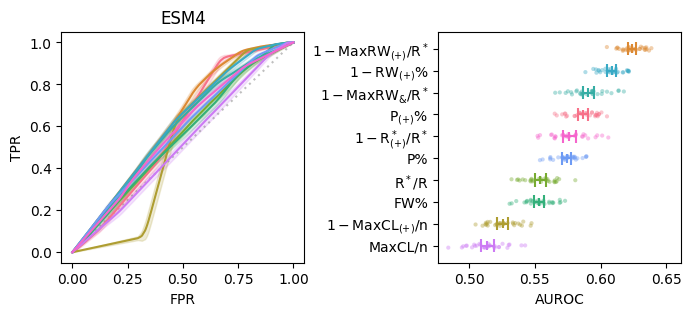
[13]:
fig, ax = plt.subplots(figsize=(3, 3))
sns.stripplot(
data=sorted_auroc,
x="AUROC", y="", size=3, hue="",
ax=ax,
palette=sorted_cmap, alpha=.4
)
ax.set(xlim=np.array(ax.get_xlim()) + np.array([0, .015]), title="ESM4")
sorted_mean_auroc = sorted_auroc.loc[
:, ["feat_names", "AUROC"]
].groupby("feat_names").mean().loc[sorted_feat_names]
ylim = (lambda v1, v2: v2 - v1)(*np.sort(np.array(ax.get_ylim())))
for i, name in enumerate(sorted_feat_names):
ax.vlines(sorted_mean_auroc.loc[name], i - (ylim * .02), i + (ylim * .02), color=sorted_cmap[i])
ax.vlines(aurocs_ci[name].low, i - (ylim * .03), i + (ylim * .03), color=sorted_cmap[i])
ax.vlines(aurocs_ci[name].high, i - (ylim * .03), i + (ylim * .03), color=sorted_cmap[i])
ax.hlines(i, aurocs_ci[name].low, aurocs_ci[name].high, color=sorted_cmap[i])
# center = np.array(ax.get_xlim()).mean()
# is_larger = (sorted_mean_auroc.loc[name] > center).item()
# low, high = aurocs_ci[name].low, aurocs_ci[name].high
# ax.text(
# low - 0.015 if is_larger else high + 0.02,
# i, f"{f2s(sorted_mean_auroc.loc[name].item())} [{f2s(low)}–{f2s(high)}]",
# ha="right" if is_larger else "left", va="center", size=6
# )
fig.savefig(f"{outputdir}/test4_roc.pdf", **kwarg_savefig)
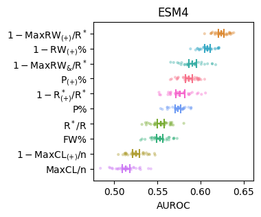
[14]:
fig, ax = plt.subplots(1, 2, figsize=(8, 3))
plt.subplots_adjust(wspace=.6)
features = [df.loc[:, v] for v in top10]
names = [
r"$1-$" + feat_names_short[v] if v in negs else feat_names_short[v] for v in top10
]
cmap = sns.color_palette("husl", len(features))
df_bar = pd.DataFrame({
"": names,
"AUROC": [roc_auc_score(df.better_with_pb, y) for y in features],
"cmap": cmap
}, index=top10).sort_values("AUROC", ascending=False)
sns.barplot(
data=df_bar, x="AUROC", y="",
hue="", legend=False, ax=ax[1],
palette=df_bar.cmap.values.tolist()
)
for i, y in enumerate(features):
ax[0].plot(
*roc_curve(df.better_with_pb, y)[:2],
label=names[i],
# + f" (AUROC: {roc_auc_score(df.better_with_pb, y).round(3)})",
c=cmap[i]
)
ax[0].plot([0, 1], [0, 1], linestyle=(0, (1, 2)), c="gray", zorder=1, alpha=0.5)
auroc = roc_auc_score(df.better_with_pb, y)
ax[1].text(
auroc,
np.where(df_bar.loc[:, ""] == names[i])[0].item(),
f2s(auroc), ha="right", va="center", color="w"
)
# ax[0].legend(fontsize="x-small", loc="upper center", bbox_to_anchor=(.5, -.2), ncol=2)
ax[0].set(title="ESM4", xlabel="FPR", ylabel="TPR")
# fig.savefig(f"{outputdir}/test4_roc", **kwarg_savefig)
[14]:
[Text(0.5, 1.0, 'ESM4'), Text(0.5, 0, 'FPR'), Text(0, 0.5, 'TPR')]
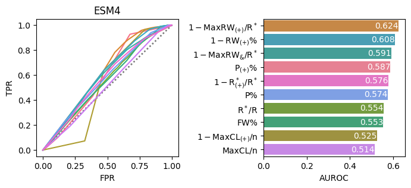
[15]:
fig, ax = plt.subplots(figsize=(15, 3))
arr_condition = np.vstack([
arr_bool for arr_bool in map(
lambda lst_bool: np.array(lst_bool),
product(*[[True, False]] * 6)
) if arr_bool.sum() > 1
])
df_arr_condition = pd.DataFrame(
arr_condition,
index=[f"arithmetic{i + 1}" for i in range(57)],
columns=[
r"$1-$" + feat_names_short[v] if v in negs else feat_names_short[v] for v in key_features
]
).T
sns.heatmap(
data=df_arr_condition,
cbar=False,
fmt="s",
annot=df_arr_condition.applymap(
lambda x: "$+$" if x else "$-$"
),
cmap="Purples",
rasterized=True
)
fig.savefig(f"{outputdir}/test4_arithmetic_conditions.pdf", **kwarg_savefig)
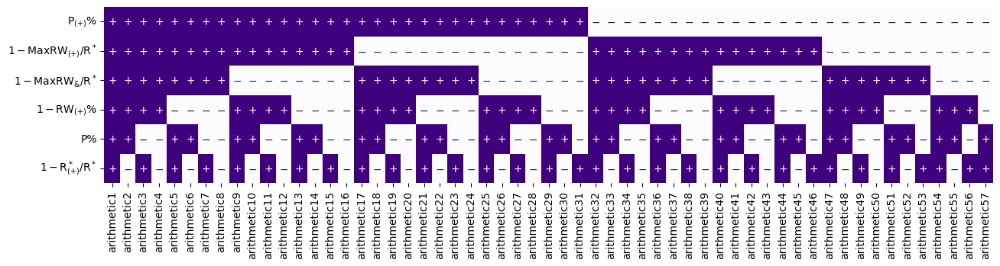
[16]:
xs, ys = np.array([]), np.array([])
feat_names = []
folds = []
metrics = [
f"arithmetic{i + 1}" for i in range(len(arr_condition))
]
aurocs = {key: [] for key in metrics}
for i, (_, te) in enumerate(
StratifiedKFold(
n_splits=30, shuffle=True, random_state=0
).split(df[metrics], df.better_with_pb)
):
x_te, y_te = df[metrics].loc[te, :], df.better_with_pb[te]
for key in metrics:
x, y = roc_curve(y_te, x_te[key])[:2]
xs, ys = np.hstack([xs, x]), np.hstack([ys, y])
feat_names += [key] * x.size
folds += [i] * x.size
aurocs[key] += [roc_auc_score(y_te, x_te[key])]
df_roc = pd.DataFrame({
"x": xs, "y": ys, "feat_names": feat_names, "folds": folds
})
aurocs_ci = {
k: bootstrap(
(v,), **kwarg_bootstrap
).confidence_interval for k, v in aurocs.items()
}
[17]:
fig, ax = plt.subplots(figsize=(3, 3))
plt.subplots_adjust(wspace=.55)
df_roc_integrated = roc_multimetric_integration(df_roc)
fixed_cmap = {
**fixed_cmap,
**{
f"arithmetic{i + 1}": c for i, c in enumerate(
sns.color_palette("rainbow_r", len(arr_condition))
)
}
}
# sorted_feat_names = pd.DataFrame(aurocs).mean().sort_values(ascending=False).index
# sorted_cmap = pd.Series(
# [i for i in range(len(metrics))], index=metrics
# )[sorted_feat_names].apply(lambda i: cmap[i]).tolist()
df_auroc = pd.DataFrame({
"AUROC": np.array([aurocs[k] for k in metrics]).ravel(),
"feat_names": np.array([[k] * len(aurocs[k]) for k in metrics]).ravel(),
"": np.array([[k.split("arithmetic")[-1]] * len(aurocs[k]) for k in metrics]).ravel()
})
df_mean_auroc = df_auroc.loc[
:, ["feat_names", "AUROC"]
].groupby("feat_names").mean().loc[metrics]
for i, key in enumerate(metrics):
df_roc_sep = df_roc_integrated.loc[
df_roc_integrated.feat_names == key, :
]
low, high = aurocs_ci[key].low, aurocs_ci[key].high
ax.plot(
df_roc_sep.x,
df_roc_sep.iloc[:, 2:].mean(axis=1),
c=fixed_cmap[metrics[i]],
label=metrics[i] + f" (AUROC: {f2s(df_mean_auroc.loc[key].item())} [{f2s(low)}–{f2s(high)}])",
)
ax.fill_between(
df_roc_sep.x,
df_roc_sep.iloc[:, 2:].mean(axis=1) - df_roc_sep.iloc[:, 2:].std(axis=1),
df_roc_sep.iloc[:, 2:].mean(axis=1) + df_roc_sep.iloc[:, 2:].std(axis=1),
color=fixed_cmap[metrics[i]], alpha=.2, zorder=-(i + 1) * 10
)
ax.plot([0, 1], [0, 1], linestyle=(0, (1, 2)), c="gray", zorder=1, alpha=0.5)
ax.set(title="ESM4", xlabel="FPR", ylabel="TPR")
ax.legend(fontsize="x-small", loc="center left", bbox_to_anchor=(1, .5), ncol=3, frameon=False)
# fig.savefig(f"{outputdir}/test4_roc_arithmetic", **kwarg_savefig)
[17]:
<matplotlib.legend.Legend at 0x7f14739ac250>
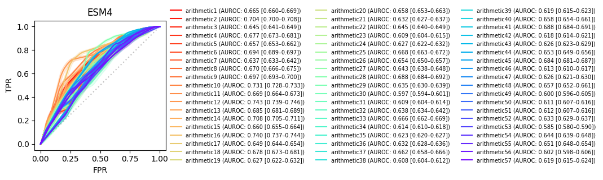
[18]:
fig, ax = plt.subplots(figsize=(13, 3))
sns.stripplot(
data=df_auroc,
y="AUROC", x="", size=3, hue="",
ax=ax,
palette=[fixed_cmap[v] for v in metrics], alpha=.7
)
ax.set_xlim([-1, 57])
ax.set_ylim(np.array(ax.get_ylim()) + np.array([-.003, 0]))
# ax.set_xticks(ax.get_xticks())
# ax.set_xticklabels(df_auroc.loc[:, ""].unique(), rotation=90, ha="right")
xlim = (lambda v1, v2: v2 - v1)(*np.sort(np.array(ax.get_xlim())))
for i, name in enumerate(metrics):
ax.hlines(df_mean_auroc.loc[name], i - (xlim * .005), i + (xlim * .005), color=fixed_cmap[name])
ax.hlines(aurocs_ci[name].low, i - (xlim * .01), i + (xlim * .01), color=fixed_cmap[name])
ax.hlines(aurocs_ci[name].high, i - (xlim * .01), i + (xlim * .01), color=fixed_cmap[name])
ax.vlines(i, aurocs_ci[name].low, aurocs_ci[name].high, color=fixed_cmap[name])
ax.text(i, aurocs_ci[name].low - 0.01, f"{i + 1}", ha="center", va="top", size=8)
ax.tick_params(labelbottom=False, bottom=False)
# ax.spines["bottom"].set_visible(False)
# ax.spines["top"].set_visible(False)
# ax.spines["right"].set_visible(False)
ax.set(title="ESM4", xlabel="Composite indices (arithmetic#)")
fig.savefig(f"{outputdir}/test4_roc_arithmetic.pdf", **kwarg_savefig)
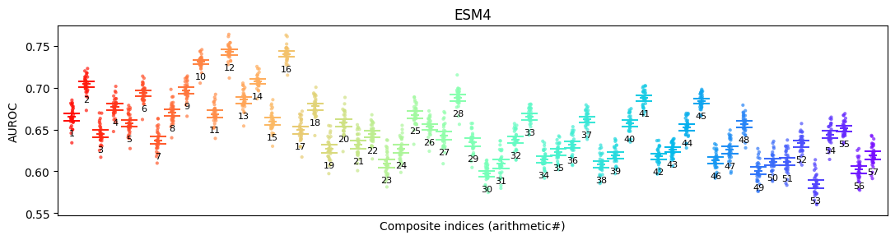
[19]:
fig, ax = plt.subplots(figsize=(3, 3))
metrics = df_mean_auroc.sort_values("AUROC", ascending=False).index[:5].tolist()
df_temp = df_auroc.loc[
np.sum([df_auroc.feat_names == m for m in metrics], axis=0).astype(bool), :
]
sns.stripplot(
data=df_temp.loc[
df_temp["feat_names"].apply(
lambda name: {v: i for i, v in enumerate(metrics)}[name]
).sort_values().index, :
],
y="AUROC", x="", size=3, hue="",
ax=ax,
palette=[fixed_cmap[v] for v in metrics], alpha=.4
)
# ax.set_xlim([-1, 57])
# ax.set_ylim(np.array(ax.get_ylim()) + np.array([-.003, 0]))
# ax.set_xticks(ax.get_xticks())
# ax.set_xticklabels(df_auroc.loc[:, ""].unique(), rotation=90, ha="right")
xlim = (lambda v1, v2: v2 - v1)(*np.sort(np.array(ax.get_xlim())))
for i, name in enumerate(metrics):
ax.hlines(df_mean_auroc.loc[name], i - (xlim * .025), i + (xlim * .025), color=fixed_cmap[name])
ax.hlines(aurocs_ci[name].low, i - (xlim * .05), i + (xlim * .05), color=fixed_cmap[name])
ax.hlines(aurocs_ci[name].high, i - (xlim * .05), i + (xlim * .05), color=fixed_cmap[name])
ax.vlines(i, aurocs_ci[name].low, aurocs_ci[name].high, color=fixed_cmap[name])
ax.text(i, aurocs_ci[name].low - 0.005, f"{metrics[i].split('arithmetic')[-1]}", ha="center", va="top", size=8)
ax.tick_params(labelbottom=False, bottom=False)
# ax.spines["bottom"].set_visible(False)
# ax.spines["top"].set_visible(False)
# ax.spines["right"].set_visible(False)
ax.set(title="ESM4", xlabel="Composite indices (arithmetic#)")
fig.savefig(f"{outputdir}/test4_auc_arithmetic.pdf", **kwarg_savefig)
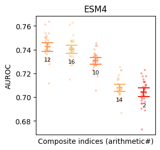
[20]:
fig, ax = plt.subplots(figsize=(14, 2))
sns.heatmap(
data=pd.DataFrame(
{
"ESM4": np.arange(1, 58, 1)[
np.argsort(
np.arange(57)[
np.argsort(df_mean_auroc.AUROC.values)
][::-1]
)
],
"ESM9": np.array([
24, 18, 23, 10, 31, 27, 28, 22, 17, 13, 7, 1, 29, 30, 20, 4, 41,
43, 40, 39, 49, 52, 50, 54, 47, 53, 46, 51, 55, 57, 56, 19, 9, 21,
12, 25, 15, 26, 16, 6, 2, 8, 3, 14, 5, 11, 35, 33, 37, 32, 42,
44, 45, 36, 38, 34, 48
])
},
index=[v.split("arithmetic")[-1] for v in df_mean_auroc.index]
).T,
cbar_kws={"label": "i-th best", "shrink": .5, 'ticks': [10, 20, 30, 40, 50]},
cmap="berlin_r", square=True, ax=ax
)
ax.set(xlabel="Composite indices (arithmetic#)")
[20]:
[Text(0.5, 54.49415204678361, 'Composite indices (arithmetic#)')]
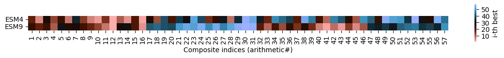
[21]:
fig, ax = plt.subplots(figsize=(3, 3))
features = [
eval("df.arithmetic" + f"{i + 1}") for i in range(len(arr_condition))
]
names = [
f"arithmetic{i + 1}" for i in range(len(features))
]
fixed_cmap = {
**fixed_cmap,
**{
f"arithmetic{i + 1}": c for i, c in enumerate(
sns.color_palette("rainbow_r", len(features))
)
}
}
for i, y in enumerate(features):
ax.plot(
*roc_curve(df.better_with_pb, y)[:2],
label=names[i] + f" (AUROC: {f2s(roc_auc_score(df.better_with_pb, y))})",
c=fixed_cmap[names[i]],
zorder=-i
)
ax.plot([0, 1], [0, 1], linestyle=(0, (1, 2)), c="gray", zorder=1, alpha=0.5)
ax.legend(fontsize="x-small", loc="center left", bbox_to_anchor=(1, .5), ncol=3, frameon=False)
ax.set(title="ESM4", xlabel="FPR", ylabel="TPR")
# fig.savefig(f"{outputdir}/test4_roc_arithmetic", **kwarg_savefig)
[21]:
[Text(0.5, 1.0, 'ESM4'), Text(0.5, 0, 'FPR'), Text(0, 0.5, 'TPR')]
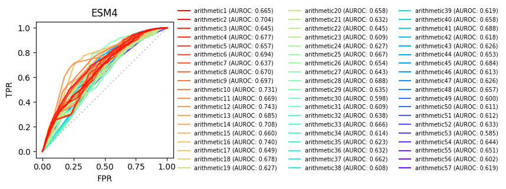
[22]:
fig, ax = plt.subplots(figsize=(3, 3))
df_bar_arith = pd.DataFrame({
"": names,
"AUROC": [roc_auc_score(df.better_with_pb, y) for y in features],
"cmap": [fixed_cmap[v] for v in names],
}, index=names).sort_values("AUROC", ascending=False).iloc[:5, :]
sns.barplot(
data=df_bar_arith,
x="AUROC", y="",
hue="", legend=False,
palette=df_bar_arith.cmap.tolist()
)
for i, auroc in enumerate(df_bar_arith.AUROC):
ax.text(
auroc, i, f2s(auroc),
ha="right", va="center", color="w"
)
ax.set(title="ESM4")
# fig.savefig(f"{outputdir}/test4_auc_arithmetic", **kwarg_savefig)
[22]:
[Text(0.5, 1.0, 'ESM4')]
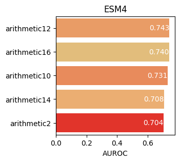
[23]:
pbsi_features = [
'positive_pathway_coverage',
'max_positive_edge_density',
'mean_positive_edge_density',
]
[24]:
fig, ax = plt.subplots(1, 2, figsize=(8, 3))
plt.subplots_adjust(wspace=.55)
df_concat = pd.concat(
[
# df_bar.loc[[v for v in df_bar.loc[top10, :].index if v in key_features], :],
df_bar.loc[[v for v in df_bar.loc[pbsi_features, :].index], :],
df_bar_arith.iloc[:1, :]
],
axis=0
)
features = [
df.loc[:, v] for v in df_concat.index
]
names = [
r"$1-$" + feat_names_short[v] if v in negs else v for v in df_concat.index
]
names = [
feat_names_short[v] if v in key_features else v for v in names
]
names = [
"PBSI" if "arithmetic" in v else v for v in names
]
cmap = df_concat.cmap
df_bar_concat = pd.DataFrame({
"": names,
"AUROC": [roc_auc_score(df.better_with_pb, y) for y in features],
"cmap": df_concat.cmap
}, index=df_concat.index)
# .sort_values("AUROC", ascending=False)
sns.barplot(
data=df_bar_concat, x="AUROC", y="",
hue="", legend=False, ax=ax[1],
palette=df_bar_concat.cmap.values.tolist()
)
for i, y in enumerate(features):
ax[0].plot(
*roc_curve(df.better_with_pb, y)[:2],
label=names[i],
# + f" (AUROC: {roc_auc_score(df.better_with_pb, y).round(3)})",
c=cmap[i]
)
ax[0].plot([0, 1], [0, 1], linestyle=(0, (1, 2)), c="gray", zorder=1, alpha=0.5)
ax[1].text(
df_bar_concat.AUROC[i],
np.where(df_bar_concat.loc[:, ""] == names[i])[0].item(),
f2s(df_bar_concat.AUROC[i]), ha="right", va="center", color="w"
)
ax[0].legend(fontsize="small", loc="lower right", frameon=False)
ax[0].set(title="ESM4", xlabel="FPR", ylabel="TPR")
# fig.savefig(f"{outputdir}/test4_roc_integrated", **kwarg_savefig)
[24]:
[Text(0.5, 1.0, 'ESM4'), Text(0.5, 0, 'FPR'), Text(0, 0.5, 'TPR')]
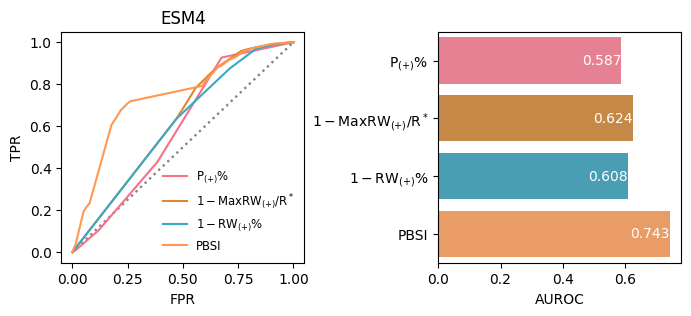
[25]:
xs, ys = np.array([]), np.array([])
feat_names = []
folds = []
metrics = pbsi_features + ["arithmetic12"]
# metrics = top10
aurocs = {key: [] for key in metrics}
for i, (_, te) in enumerate(
StratifiedKFold(
n_splits=30, shuffle=True, random_state=0
).split(df[metrics], df.better_with_pb)
):
x_te, y_te = df[metrics].loc[te, :], df.better_with_pb[te]
for key in metrics:
x, y = roc_curve(y_te, x_te[key])[:2]
xs, ys = np.hstack([xs, x]), np.hstack([ys, y])
feat_names += [key] * x.size
folds += [i] * x.size
aurocs[key] += [roc_auc_score(y_te, x_te[key])]
df_roc = pd.DataFrame({
"x": xs, "y": ys, "feat_names": feat_names, "folds": folds
})
aurocs_ci = {
k: bootstrap(
(v,), **kwarg_bootstrap
).confidence_interval for k, v in aurocs.items()
}
[26]:
fig, ax = plt.subplots(1, 2, figsize=(8, 3))
plt.subplots_adjust(wspace=.55)
df_roc_integrated = roc_multimetric_integration(df_roc)
cmap = [fixed_cmap[v] for v in metrics]
for i, key in enumerate(metrics):
df_roc_sep = df_roc_integrated.loc[
df_roc_integrated.feat_names == key, :
]
ax[0].plot(
df_roc_sep.x,
df_roc_sep.iloc[:, 2:].mean(axis=1),
c=cmap[i]
)
ax[0].fill_between(
df_roc_sep.x,
df_roc_sep.iloc[:, 2:].mean(axis=1) - df_roc_sep.iloc[:, 2:].std(axis=1),
df_roc_sep.iloc[:, 2:].mean(axis=1) + df_roc_sep.iloc[:, 2:].std(axis=1),
color=cmap[i], alpha=.2, zorder=-(i + 1) * 10
)
ax[0].plot([0, 1], [0, 1], linestyle=(0, (1, 2)), c="gray", zorder=1, alpha=0.5)
ax[0].set(title="ESM4", xlabel="FPR", ylabel="TPR")
# ax.legend(fontsize="x-small", loc="lower right")
sorted_feat_names = pd.DataFrame(aurocs).mean().sort_values(ascending=False).index
sorted_cmap = pd.Series(
[i for i in range(len(metrics))], index=metrics
)[sorted_feat_names].apply(lambda i: cmap[i]).tolist()
fmt_name = lambda name: "PBSI" if "arithmetic" in name else [
feat_names_short[name], "$1-$" + feat_names_short[name]
][name in negs]
sorted_auroc = pd.DataFrame({
"AUROC": np.array([aurocs[k] for k in sorted_feat_names]).ravel(),
"feat_names": np.array([[k] * len(aurocs[k]) for k in sorted_feat_names]).ravel(),
"": np.array([
[fmt_name(k)] * len(aurocs[k]) for k in sorted_feat_names
]).ravel()
})
# fixed_cmap = {k: v for k, v in zip(sorted_feat_names, sorted_cmap)}
sns.stripplot(
data=sorted_auroc,
x="AUROC", y="", size=3, hue="",
ax=ax[1],
palette=sorted_cmap, alpha=.4
)
# ax[1].set(xlim=(0, ax[1].get_xlim()[1]))
sorted_mean_auroc = sorted_auroc.loc[
:, ["feat_names", "AUROC"]
].groupby("feat_names").mean().loc[sorted_feat_names]
ylim = (lambda v1, v2: v2 - v1)(*np.sort(np.array(ax[1].get_ylim())))
for i, name in enumerate(sorted_feat_names):
ax[1].vlines(sorted_mean_auroc.loc[name], i - (ylim * .02), i + (ylim * .02), color=sorted_cmap[i])
ax[1].vlines(aurocs_ci[name].low, i - (ylim * .03), i + (ylim * .03), color=sorted_cmap[i])
ax[1].vlines(aurocs_ci[name].high, i - (ylim * .03), i + (ylim * .03), color=sorted_cmap[i])
ax[1].hlines(i, aurocs_ci[name].low, aurocs_ci[name].high, color=sorted_cmap[i])
center = np.array(ax[1].get_xlim()).mean()
is_larger = (sorted_mean_auroc.loc[name] > center).item()
low, high = aurocs_ci[name].low, aurocs_ci[name].high
ax[1].text(
low - 0.015 if is_larger else high + 0.015,
i, f"{f2s(sorted_mean_auroc.loc[name].item())} [{f2s(low)}–{f2s(high)}]",
ha="right" if is_larger else "left", va="center", size=8
)
# fig.savefig(f"{outputdir}/test4_roc_integrated", **kwarg_savefig)
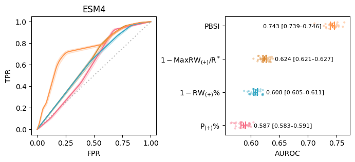
[34]:
fig, ax = plt.subplots(figsize=(3, 3))
df_roc_integrated = roc_multimetric_integration(df_roc)
cmap = [fixed_cmap[v] for v in ["arithmetic12"]]
for i, key in enumerate(["arithmetic12"]):
df_roc_sep = df_roc_integrated.loc[
df_roc_integrated.feat_names == key, :
]
low, high = aurocs_ci[key].low, aurocs_ci[key].high
ax.plot(
df_roc_sep.x,
df_roc_sep.iloc[:, 2:].mean(axis=1),
c=cmap[i],
label=f"AUROC: {f2s(sorted_mean_auroc.loc[key].item())} [{f2s(low)}–{f2s(high)}]",
zorder=10
)
for fold in df_roc.folds.unique():
ax.plot(
df_roc.loc[(df_roc.folds == fold) & (df_roc.feat_names == key), :].x,
df_roc.loc[(df_roc.folds == fold) & (df_roc.feat_names == key), :].y,
c=cmap[i], alpha=.1, zorder=-100
)
ax.plot([0, 1], [0, 1], linestyle=(0, (1, 2)), c="gray", zorder=1, alpha=0.5)
ax.set(title="ESM4", xlabel="FPR", ylabel="TPR")
ax.legend(fontsize=8, frameon=False)
fig.savefig(f"{outputdir}/test4_roc_integrated.pdf", **kwarg_savefig)
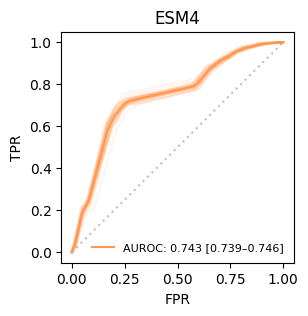
[28]:
fig, ax = plt.subplots(figsize=(3, 3))
df_concat = df_bar_arith.iloc[:1, :]
features = [
df.loc[:, v] for v in df_concat.index
]
names = ["PBSI"]
cmap = df_concat.cmap
for i, y in enumerate(features):
ax.plot(
*roc_curve(df.better_with_pb, y)[:2],
# label=names[i] +
label=f"AUROC: {roc_auc_score(df.better_with_pb, y).round(3)}",
c=cmap[i]
)
ax.plot([0, 1], [0, 1], linestyle=(0, (1, 2)), c="gray", zorder=1, alpha=0.5)
ax.legend(fontsize="small", loc="lower right", frameon=False)
ax.set(title="PBSI (ESM4)", xlabel="FPR", ylabel="TPR")
# fig.savefig(f"{outputdir}/test4_roc_integrated", **kwarg_savefig)
[28]:
[Text(0.5, 1.0, 'PBSI (ESM4)'), Text(0.5, 0, 'FPR'), Text(0, 0.5, 'TPR')]
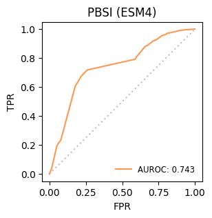
[29]:
fig, ax = plt.subplots(figsize=(3, 3))
for i, y in enumerate(features):
ax.plot(
*precision_recall_curve(df.better_with_pb, y)[:2][::-1],
label=names[i] + f" (AP: {average_precision_score(df.better_with_pb, y).round(3)})",
c=cmap[i]
)
base = df.better_with_pb.value_counts().cumsum()[0] / df.better_with_pb.value_counts().cumsum()[1]
ax.plot([0, 1], [base, base], linestyle=(0, (1, 2)), c="gray", zorder=1, alpha=0.5)
ax.legend(fontsize="x-small", loc="center left", bbox_to_anchor=(1, .5), frameon=False)
ax.set(title="ESM4", xlabel="recall", ylabel="precision")
# fig.savefig(f"{outputdir}/test4_pr", **kwarg_savefig)
[29]:
[Text(0.5, 1.0, 'ESM4'), Text(0.5, 0, 'recall'), Text(0, 0.5, 'precision')]
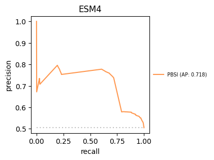
[31]:
fig, ax = plt.subplots(1, 2, figsize=(6.5, 3))
plt.subplots_adjust(wspace=.25)
df_concat = pd.concat(
[
df_bar.loc[[v for v in df_bar.loc[key_features, :].index if v in key_features], :],
df_bar_arith
],
axis=0
)
features = [
df.loc[:, v] for v in df_concat.index
]
names = [
r"$1-$" + feat_names_short[v] if v in negs else v for v in df_concat.index
]
names = [
feat_names_short[v] if v in key_features else v for v in names
]
cmap = df_concat.cmap
for i, y in enumerate(features):
ax[0].plot(
*roc_curve(df.better_with_pb, y)[:2],
label=names[i] + f" (AUROC: {roc_auc_score(df.better_with_pb, y).round(3)})",
c=cmap[i]
)
ax[0].plot([0, 1], [0, 1], linestyle=(0, (1, 2)), c="gray", zorder=1, alpha=0.5)
ax[1].plot(
*precision_recall_curve(df.better_with_pb, y)[:2][::-1],
label=names[i] + \
f" (AUROC: {roc_auc_score(df.better_with_pb, y).round(3)}, " + \
f"AP: {average_precision_score(df.better_with_pb, y).round(3)})" ,
c=cmap[i]
)
base = df.better_with_pb.value_counts().cumsum()[0] / df.better_with_pb.value_counts().cumsum()[1]
ax[1].plot([0, 1], [base, base], linestyle=(0, (1, 2)), c="gray", zorder=1, alpha=0.5)
ax[1].legend(fontsize="small", loc="upper center", bbox_to_anchor=(-.15, -.2), ncol=2, frameon=False)
ax[0].set(
title="ROC curve (ESM9)", xlabel="FPR", ylabel="TPR"
)
ax[1].set(title="PR curve (ESM9)", xlabel="recall", ylabel="precision")
# fig.savefig(f"{outputdir}/test4_roc_pr_integrated", **kwarg_savefig)
[31]:
[Text(0.5, 1.0, 'PR curve (ESM9)'),
Text(0.5, 0, 'recall'),
Text(0, 0.5, 'precision')]
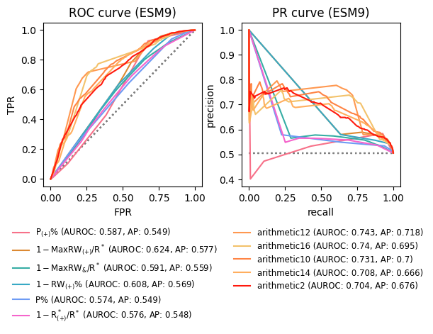
[32]:
from sklearn.linear_model import LogisticRegression
[33]:
xs, ys = np.array([]), np.array([])
feat_names = []
folds = []
metrics = pbsi_features
# metrics = top10
aurocs = {key: [] for key in ["Logistic regression", "PBSI"]}
for i, (tr, te) in enumerate(
StratifiedKFold(
n_splits=30, shuffle=True, random_state=0
).split(df[metrics], df.better_with_pb)
):
x_tr, y_tr = df[metrics].loc[tr, :], df.better_with_pb[tr]
x_te, y_te = df[metrics].loc[te, :], df.better_with_pb[te]
for key in ["Logistic regression", "PBSI"]:
if key == "Logistic regression":
lr = LogisticRegression(random_state=0)
lr.fit(x_tr, y_tr)
x, y = roc_curve(y_te, lr.predict_proba(x_te)[:, 1])[:2]
aurocs[key] += [roc_auc_score(y_te, lr.predict_proba(x_te)[:, 1])]
else:
x, y = roc_curve(y_te, df.loc[x_te.index, "arithmetic12"])[:2]
aurocs[key] += [roc_auc_score(y_te, df.loc[x_te.index, "arithmetic12"])]
xs, ys = np.hstack([xs, x]), np.hstack([ys, y])
feat_names += [key] * x.size
folds += [i] * x.size
df_roc = pd.DataFrame({
"x": xs, "y": ys, "feat_names": feat_names, "folds": folds
})
aurocs_ci = {
k: bootstrap(
(v,), **kwarg_bootstrap
).confidence_interval for k, v in aurocs.items()
}
[34]:
fig, ax = plt.subplots(1, 2, figsize=(7, 3))
plt.subplots_adjust(wspace=.35)
df_roc_integrated = roc_multimetric_integration(df_roc)
cmap = [".2", fixed_cmap["arithmetic12"]]
for i, key in enumerate(["Logistic regression", "PBSI"]):
df_roc_sep = df_roc_integrated.loc[
df_roc_integrated.feat_names == key, :
]
for fold in df_roc.folds.unique():
ax[0].plot(
df_roc.loc[(df_roc.feat_names == key) & (df_roc.folds == fold), :].x,
df_roc.loc[(df_roc.feat_names == key) & (df_roc.folds == fold), :].y,
c=cmap[i], alpha=.1, zorder=-100
)
ax[0].plot(
df_roc_sep.x,
df_roc_sep.iloc[:, 2:].mean(axis=1),
c=cmap[i], label=key, zorder=10
)
ax[0].plot([0, 1], [0, 1], linestyle=(0, (1, 2)), c="gray", zorder=1, alpha=0.5)
ax[0].set(title="ESM4", xlabel="FPR", ylabel="TPR")
ax[0].legend(loc="lower right", frameon=False)
sorted_feat_names = pd.DataFrame(aurocs).mean().sort_values(ascending=False).index
sorted_cmap = pd.Series(
[i for i in range(len(["Logistic regression", "PBSI"]))], index=["Logistic regression", "PBSI"]
)[sorted_feat_names].apply(lambda i: cmap[i]).tolist()
# fmt_name = lambda name: "PBSI" if "arithmetic" in name else [
# feat_names_short[name], "$1-$" + feat_names_short[name]
# ][name in negs]
sorted_auroc = pd.DataFrame({
"AUROC": np.array([aurocs[k] for k in sorted_feat_names]).ravel(),
"feat_names": np.array([[k] * len(aurocs[k]) for k in sorted_feat_names]).ravel(),
"": np.array([
[k] * len(aurocs[k]) for k in sorted_feat_names
]).ravel()
})
# fixed_cmap = {k: v for k, v in zip(sorted_feat_names, sorted_cmap)}
sns.stripplot(
data=sorted_auroc,
y="AUROC", x="", size=3, hue="",
ax=ax[1],
palette=sorted_cmap, alpha=.4
)
# ax[1].set(xlim=(0, ax[1].get_xlim()[1]))
sorted_mean_auroc = sorted_auroc.loc[
:, ["feat_names", "AUROC"]
].groupby("feat_names").mean().loc[sorted_feat_names]
xlim = (lambda v1, v2: v2 - v1)(*np.sort(np.array(ax[1].get_xlim())))
ci_labels = []
for i, name in enumerate(sorted_feat_names):
ax[1].hlines(sorted_mean_auroc.loc[name], i - (xlim * .025), i + (xlim * .025), color=sorted_cmap[i])
ax[1].hlines(aurocs_ci[name].low, i - (xlim * .05), i + (xlim * .05), color=sorted_cmap[i])
ax[1].hlines(aurocs_ci[name].high, i - (xlim * .05), i + (xlim * .05), color=sorted_cmap[i])
ax[1].vlines(i, aurocs_ci[name].low, aurocs_ci[name].high, color=sorted_cmap[i])
# low, high = aurocs_ci[name].low, aurocs_ci[name].high
# ci_labels += [name + "\n" + f"{f2s(sorted_mean_auroc.loc[name].item())} [{f2s(low)}–{f2s(high)}]"]
ax[1].set_xticklabels(sorted_feat_names, fontsize="small")
ax[1].set_xlim([-.3, 1.3])
fig.savefig(f"{outputdir}/test4_logistic_regression.pdf", **kwarg_savefig)
/tmp/ipykernel_59121/2762970472.py:72: UserWarning: set_ticklabels() should only be used with a fixed number of ticks, i.e. after set_ticks() or using a FixedLocator.
ax[1].set_xticklabels(sorted_feat_names, fontsize="small")

[35]:
lr.coef_
[35]:
array([[3.68583122, 2.07738729, 4.59906188]])
[ ]: